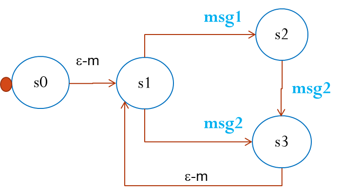
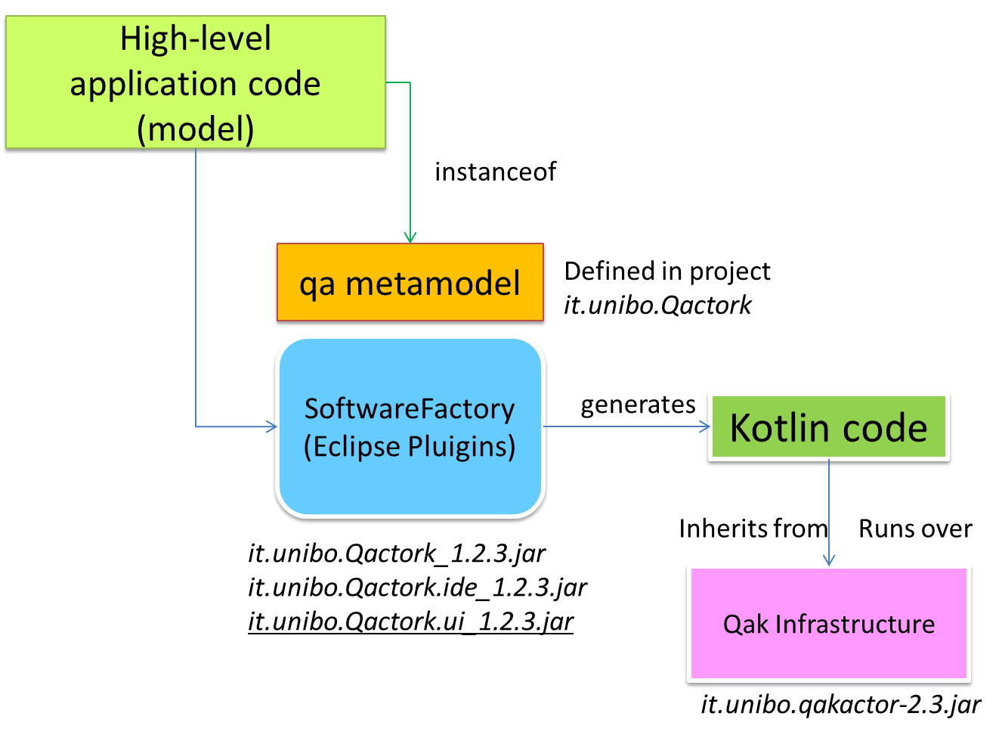
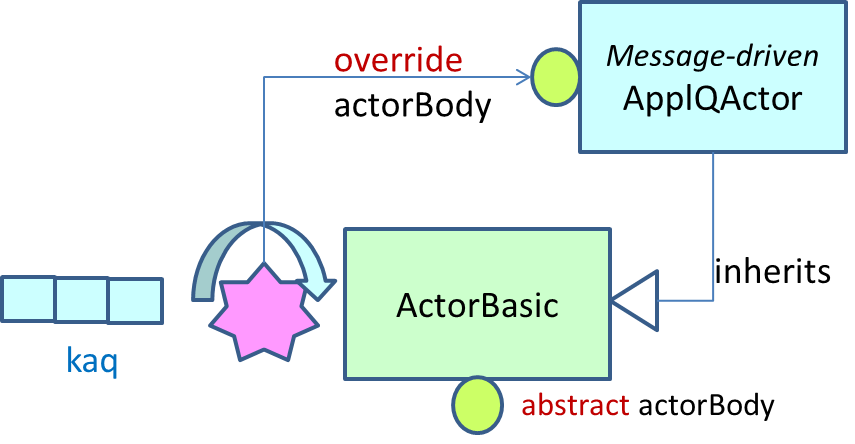
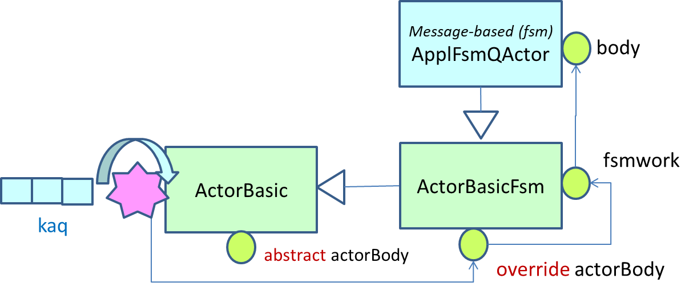
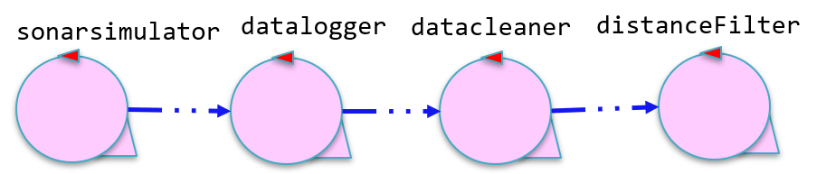

LabIss2021 | Introduction to QAkactors
- Introduction
- QActors: an overview
- The Qak-Infrastructure
- More than simple actors
- Examples (in project it.unibo.demoqak21 )
- QActors and process development
- Models and meta-models
- Domain Specific Languages

Introduction
In
akka documentation about the actor model
we read
about mismatches between (oo) traditional programming assumptions and the reality of modern multi-threaded, multi-CPU architectures:
The challenge of encapsulation
In Object Oriented languages we rarely think about threads or linear execution paths in general.
We often envision a system as a network of object instances that react to method calls,
modify their internal state, then communicate with each other via method calls

|
However, in a multi-threaded distributed environment, what actually happens is that threads
“traverse” this network of object instances by following method calls.
As a result, threads are what really drive execution:


|
The illusion of shared memory
On modern architectures CPUs are writing to cache lines instead of writing to memory directly.
Most of these caches are local to the CPU core, that is, writes by one core are not visible by another.
In order to make local changes visible to another core, and hence to another thread,
the cache line needs to be shipped to the other core’s cache.
On the JVM, we have to explicitly denote memory locations to be shared across threads by using volatile markers.
But shipping cache lines across cores is a very costly operation.
|
There is no real shared memory anymore, CPU cores pass chunks of data (cache lines) explicitly
to each other just as computers on a network do.
Inter-CPU communication and network communication have more in common than many realize.
Passing messages is the norm now be it across CPUs or networked computers.
|
The illusion of a call stack
Call stacks do not cross threads and hence, do not model asynchronous call chains.
What usually happens, is that a "caller" puts an object into a memory location shared by a worker thread ("callee"),
which in turn, picks it up in some event loop.
 A serious issue arises when a worker thread fails with an exception.
The "caller" thread needs to be notified somehow, but there is no call stack to unwind with an exception.
A serious issue arises when a worker thread fails with an exception.
The "caller" thread needs to be notified somehow, but there is no call stack to unwind with an exception.
|
Failure handling
Call stack-based error handling breaks down and new, explicit error signaling mechanisms need to be introduced.
Failures become part of the domain model.
Failure notification can only be done via a side-channel, for example putting an error code where the "caller" thread
otherwise expects the result once ready.
If this notification is not in place, the "caller" never gets notified of a failure and the task is lost!
This is surprisingly similar to how networked systems work where messages/requests can get lost/fail without any notification.
|
The conclusion is that:
instead of hiding the message passing aspect through variables marked as shared
or using atomic data structures, a more disciplined and principled approach is
to keep state local to a concurrent entity and propagate data or events between concurrent
entities explicitly via messages.
In other words:
QActors: an overview
QActor is the name given to the custom language inspired by the
akka actor model
based, in its turn, on the work of
Hewitt at
MIT.
The leading
Q/q in the
QActor word, means 'quasi' since the
QActor language
it is not intended to be a general purpose programming language, but rather a
modeling language that should help
application designer in defining working models of distributed systems based on actors that behave as Finite State Machines.
The addition of a
k to the prefix (e.g.
qak, QAk) means that we are making reference to the version implemented in
Kotlin,
without using any
Akka support (as done in the first version of the language).
The language is defined using the
Xtext framework and is based on a core set of concepts that compose
the
QActor-metamodel. These concepts can be summarized as follows:
- A QA-System is a collection of active entities (QActors) each working in a
computational node (Context).
- QActors interact by using Messages of different types (Dispatch,
Request,...) and Events.
- A QActor can deliver information to another QActor (both local or remote)
by using a send-operation or by emitting events.
- High-level send-operations do not use low-level references, but only actor-names
(DESTNAME in the operations on the right).
- Each context owns a set QActors that can interact with components (actors or 'aliens')
working on a different node, by means of the following protcols:
- TCP : on the port specified by the Context
- CoAP : on the port specified by the Context
- MQTT : using the broker specified in the mqttBroker declaration
|

Qak specification template
System < NAME OF THE SYSTEM >
mqttBroker "broker.hivemq.com" : 1883 //OPTIONAL
//DECLARATION OF MESSAGES AND EVENTS
//DECLARATION OF CONTEXTS
Context CTXNAME ip [host="HOSTIP" port=PORTNUM]
//DECLARATION OF ACTORS
For an introductory example, see the sentinel actor in
LabQakExamples2021.html
|
Messages
In the QActor metamodel, a message is intended as information sent in asynchronous way by some source to
some specific destination.
For asynchronous transmission we intend that the messages can be 'buffered' by the infrastructure,
while the 'unbuffered' transmission is said to be synchronous.
Events
In the QActor metamodel, an event is intended as information emitted by some source without any explicit
destination.
Events whose identifier start with the prefix local_ are not propagated outside the context in which they are generated.
Representation
|
High-level message-operations
The methods that an application designer can use to deliver messages are:
- forward for a Dispatch
- request, replyTo, askFor for a Request
- emit for an Event
forward DESTNAME -m MSGID : PAYLOAD //for dispatch
request DESTNAME -m REQID : PAYLOAD //for request
replyTo REQID with REPLYID : PAYLOAD //for response
askFor REQREF REQ : PAYLOAD //for asking a caller
--------------------------------------------
emit EVID : PAYLOAD //for event
The syntax of the language is defined (see
Qactork.xtext) using the
Xtext framework as follows:
Forward : "forward" dest=[QActorDeclaration]
"-m" msgref=[Dispatch] ":" val = PHead ;
Emit : "emit" msgref=[Event] ":" val = PHead ;
Demand : "request" dest=[QActorDeclaration]
"-m" msgref=[Request] ":" val = PHead ;
Answer : "replyTo" reqref=[Request]
"with" msgref=[Reply] ":" val = PHead ;
ReplyReq : "askFor" reqref=[Request]
"request" msgref=[Request] ":" val = PHead ;
//Prolog-like syntax
PHead : PAtom | PStruct | PStructRef ;
...
The QActor metamodel does not define any explicit receive operation.
|
Behavior
The QActor metamodel does not envisage any explicit receive operation, since the behavior is
modeled as a Moore state machine
in which state transitions are triggered by messaged and events.
The syntax of the language is defined
(see
Qactork.xtext)
using the
Xtext framework as follows:
State :
"State" name=ID ( normal ?= "initial" )?
"{" ( actions += ActionInState )* "}"
( transition = Transition )?
;
ActionInState = ... //QActor actions or kotlin code
Transition : EmptyTransition | NonEmptyTransition ;
EmptyTransition : "Goto" targetState=[State]
("if" guard=STRING "else" othertargetState=[State] )? ;
NonEmptyTransition :
"Transition" name=ID (duration=Timeout)?
(trans +=InputTransition)* ;
Timeout = TimeoutInt | ... ;
TimeoutInt : "whenTime" msec=INT "->" targetState = [State];
InputTransition : EventTransSwitch | MsgTransSwitch |
RequestTransSwitch | ReplyTransSwitch ;
EventTransSwitch : "whenEvent" message=[Event]
("and" guard=STRING )? "->" targetState=[State] ;
MsgTransSwitch : "whenMsg" message=[Dispatch]
("and" guard=STRING )? "->" targetState=[State] ;
RequestTransSwitch : "whenRequest" message=[Request]
("and" guard=STRING )? "->" targetState=[State] ;
ReplyTransSwitch : "whenReply" message=[Reply]
("and" guard=STRING )? "->" targetState=[State] ;
If a QActor state is not 'waiting' for a
transition including a message m the message is stored in a queue local to the actor.
|
Demo
The code of a QActor mirrors the structure of a FSM diagram introduced in
FSM | A kotlin-based DSL:

The code is in demo0.qak.
and described in
LabQakExamples2020 | Using the QActor (meta)model (project it.unibo.demoqak21)
System demo
Dispatch msg1 : msg1(ARG)
Dispatch msg2 : msg2(ARG)
Context ctxdemo ip [host="localhost" port=8055]
QActor demo context ctxdemo{
State s0 initial { }
Goto s1
State s1{ println("demo in s1") }
Transition t0 whenMsg msg1 -> s2
whenMsg msg2 -> s3
State s2{ println("demo in s2") }
Transition t0 whenMsg msg2 -> s3
State s3{ println("demo in s3") }
Goto s1
}
Firing a transition
A Transition is 'fired' if the related condition (whenTime, whenEvent, whenMsg, ...)
together with the related guard (if any) is true.
A guard is expressed as a condition written in user-defined Kotlin code.
|
An example (sentinel)
Event alarm : alarm(V)
QActor sentinel context ctxdemo{
[# val counter=0 #] //Kotlin code
State s0 initial { println("sentinel | STARTS") } //QActor action
Goto watch if "counter==0" else end //guard
State watch{ println("sentinel | WATCH") }
Transition t0
whenTime 1000 -> timeout (0)
whenEvent alarm and [# counter==0 #] -> handleAlarm //guard
State timeout{
printCurrentMessage //QActor action
println("sentinel | TIMEOUT")
[# counter++ #] //Kotlin code
}
Goto s0 (1)
//Transition t0 whenTime 10 > explore s0 (2)
State handleAlarm{
printCurrentMessage
onMsg ( alarm : alarm(V) ) { //QActor action
println("sentinel | ALARM ${payloadArg(0)}")
delay 1000
}
}
Goto s0
State explore{ println("sentinel | exploring (quite fast) ...") }
Goto watch
State end{ println("sentinel | ENDS") }
}
|
About guards
The actor goes
- from the state s0 to the state watch only
if the guard counter==0 is true; otherwise it goes to end
- from the state watch to the state handleAlarm only
if the event alarm occurs and the guard counter==0 is true
About onMsg
The QActor action onMsg executes the related code only if the current message can be
Prolog-unified
with the alarm template defined in Event declaration
and with the template specified in onMsg.
About whenTime
The transition-condition whenTime is implemented by creating in dynamic way a
TimerActor.
When the given time expires, the timer that emits a system-event with a name that starts with the prefix local_tout;
afterwards it terminates.
The system event is not emitted if a message can be handled before that the timer-time expires.
About payloadArg
The payloadArg is described later, in shortcut
The output
The full code of this example is reported in
LabQakExamples2021.html
|
Messages over the network
Each QActor works in a context that provides support for sending-receiving messages on the network,
by means of several types of protocols. At the moment the supported protocols are:
- TCP as an example
of point-to-point, two-way protocols;
- MQTT as an example of publish-subscribe protocols;
- CoAP, as an example of a
lightweight REST protocol
suited for M2M interaction
The mapping between the high-level communication actions and a specific protocol technology is done by the QActor-infrastructure
with the help of the Eclipse QActor software factory deployed by the
it.unibo.issLabStart/resources/plugins
|
The QActor software factory

|
About implementation
The metamodel is supported by the
qak-infrastructure defined in the project
it.unibo.qakactor and
deployed in
it.unibo.qakactor-2.2.jar.
ActorBasic.kt is
an abstract class that implements the concept of qakactor as a message-driven entity that
handles messages by delegating the work to the abstract the method actorBody.
abstract class ActorBasic(val name: String,
val scope: CoroutineScope = GlobalScope,
val confined : Boolean = false,
val ioBound : Boolean = false,
val channelSize : Int = 50
) : MqttCallback { //For MQTT messages
val actor = scope.actor<ApplMessage>(
dispatcher, capacity=channelSize ) {
//Kactor loop
for( msg in channel ) {
...
actorBody( msg )
}
//To be defined by the application designer
abstract suspend fun actorBody(msg : ApplMessage)
...
 ActorBasic.kt
includes a Kotlin actor (let us name it as kactor) associated to a dispatcher defined as follows:
ActorBasic.kt
includes a Kotlin actor (let us name it as kactor) associated to a dispatcher defined as follows:
- If confined=true, the actor is activated with a kotlinx.coroutines.newSingleThreadContext
that makes use of just 1 Thread
- If confined=false and iobound=true, the actor is activated with a kotlinx.coroutines.newFixedThreadPoolContext
with 64 Threads
- If confined=false and iobound=false, the default of type kotlinx.coroutines.newFixedThreadPoolContext
is selected, that handles as many Threads as the number of CPUs available.
The class ActorBasic.kt can be used to define
applicative actors working in message-driven way:

See for example CodedQActors.
|
ActorBasicFsm.kt is
an abstract class that extends ActorBasic.kt
by defining the method actorBody so to implement the behavior of a FSM.
abstract class ActorBasicFsm(qafsmname: String,
fsmscope: CoroutineScope = GlobalScope,
discardMessages : Boolean = false,
confined : Boolean = false,
ioBound : Boolean = false,
channelSize : Int = 50
): ActorBasic( qafsmname, fsmscope,
discardMessages, confined, ioBound, channelSize ) {
abstract fun getBody(): (ActorBasicFsm.() -> Unit)
abstract fun getInitialState(): String
override suspend fun actorBody(msg: ApplMessage) {
...
fsmwork(msg)
}
fsmwork
//behavior of ActorBasicFsm.kt
suspend fun fsmwork(applMsg: ApplMessage) {
//see Message handling rules later on
}
This class ActorBasicFsm.kt is designed according the same principles exposed in
FSM | A kotlin-based DSL
It can be used to define
applicative actors working as Finite State Machines:

Qak-Message support
A received message has type:
ApplMessage.kt, that requires
the tuProlog library.
Some help in building and sending messages is given by the class:
MsgUtil.kt.
|
Message handling rules
With reference to a user-defined QAkactor qa of type ActorBasicFsm,
let us call:
- currentState: the name the current state of qa;
- currentMsg: the msgId of the message that qa is processing;
- kaq the message-queue of the Kotlin kactor;
- mstore the message-queue local ActorBasicFsm ;
- tset: the set of messages mentioned in the transition related to the currentState.
Messages sent to qa and events are inserted in the kaq.
fsmwork is called in a message-driven way with a new applMsg
by the kactor loop ,
while qa is in currentState. Its behavior is:
- qa checks for transition for applMsg:
- if it is possible to fire a transition, set currentMsg=applMsg,
change currentState and goto 2)
- if no transition can be fired and discardMessages=false, store the message in the mstore;
- qa executes the actions of a state:
when the state actions terminate, if there is an empty-move goto 3) else goto 4);
- qa executes a empty-move:
set currentMsg=NoMsg , change currentState,
and goto 2)
-
qa looks at the mstore and
- if a message ms is found in tset :
call fsmwork(ms);
- if no message is found terminate fsmwork (the
next call will be perfomed by the kactor loop );
|
Message delivery rules
- A message sent from a to a local actor b, is inserted in the kaq of the kactor of b.
- An event raised in some Context, is delivered to all the other known Contexts of the system
and to all the 'alien' connected via TCP or via MQTT.
When a message sent from a to actor b working in a different context (on a different node),
the Qak-Infrastructure attempts to find the ipaddress-port of the receiver context:
- If information about the context of b is found and a MQTT broker is specified in the model,
the message is sent via MQTT; otherwise it is sent via CoAP.
- If no information about the context of b is found, the message to deliver should be a reply
to a request made by some 'alien'.
The system first checks for the existence of an active TCP connection
with the receiver (the 'alien' made a request via TCP).
In such a connection is found, the message is sent over it.
Otherwise, an
attempt is made to send the reply via MQTT, hoping that the 'alien' was MQTT-connected.
|
Event propagation rules
- The event emitted by a QActor that belongs to a qak-system (qasys) is propagated via Context to
all the other QActor of qasys.
-
A standalone QActor (e.g. resource.qak)
that does not use MQTT
does not propagate events to QActors that use it, neither can perceive events emitted by them.
-
An event emiited by an 'alien' component connected to a QActor via TCP will be perceived by the connected
QActor only (i.e. it is not propagated to the other Contexts of the system).
- The event that reaches a Context (since propagated from another Contexts or emitted by an 'alien')
is propagated only to the actors internal to that Context.
- The event emitted by a QActor of a qasys that uses MQTT are propagated on the specified topic.
|
|
Flag -msglog
System ... -msglog
When this flag is set, the qak-infrastructure creates a messag-log file for each actor and for each context in the system.
|
Flag -trace
System ... -trace
When this flag is set, the qak-infrastructure shows details about its internal behavior
|
CodedQActors
A CodedQActor is an actor completely written in Kotlin that can be included in a qak-model by specifying its class name. For example:
System ...
Context ctxabc
CodedQActor qacodedname context ctxabc
className "unibo.classname"
Its presence is included in the description of the system.
The QA-infrastructure handles a CodedQActor as a usual; in particular, it will 'inject' into it the context
specified by the model.
|
A CodedQActor is usually introduced as a specilization of ActorBasic:
class qacoded (name : String ) : ActorBasic( name ) {
override suspend fun actorBody(msg: ApplMessage) {
//TODO
}
}
For examples, see:
it.unibo.qakDemo/src/kotlinCode/qacoded.kt
LabQakExamples2021.html#qastreams
|
Executable jars
plugins {
id 'java'
id 'org.jetbrains.kotlin.jvm' version '1.4.32'
id 'application'
}
...
mainClassName = 'it.unibo.ctxabc.MainxyzKt'
jar {
println("executing jar")
from sourceSets.main.allSource
manifest {
attributes 'Main-Class': "$mainClassName"
}
}
|
The code on the left is part of the file (properly edit by the Application designer)
Note that the main class name must be terminated with a Kt, since kotlin code is translated in Java.
|
gradle -b build_ctxabc.gradle distZip
|
Generates the distribution file is the directory build/distributions
|
- unzip the distribution file in some dir
- work in the bin directory
- copy in this directory the generated files
*.pl and other user-defined files
|
...
On the PC: activate the system by running the generated: it.unibo.sysname.bat
On Linux, RaspberryPi : bash it.unibo.sysname
|
More than simple actors
Actors as (CoAP) resources
For an introdction to CoAP, see
LabCoAP.html.
A QAkactor named
qa working in a context named
ctxqa can be accessed as a
CoAP
resource with
URI-path
ctxqa/qa.
and works as a (
CoAP) observable resource.
The current state
of the resource can be stored as a
String in the variable
ActorResourceRep, by using the operation
updateResource of the
QAkactor language.
An example is given in
LabQakExamples2021.html
Actors as streams
Reactive programming
is a combination of the best ideas from the ,
Observer pattern, the
Iterator pattern, and
Functional programming.
In
reactive programming, the consumer reacts to the data as it comes in.
This is the reason why asynchronous programming is also called reactive programming.
Reactive programming allows to
propagates event changes to registered observers.
Reactive capabilities are achieved by adding some property to our
ActorBasic.kt class:
abstract class ActorBasic( ... ) {
protected val subscribers = mutableListOf()
fun subscribe( a : ActorBasic) : ActorBasic {
subscribers.add(a)
return a
}
fun subscribeLocalActor( actorName : String) : ActorBasic {
val a = sysUtil.getActor(actorName)
if( a != null ){ subscribers.add(a); return a}
}
fun unsubscribe( a : ActorBasic) {
subscribers.remove(a)
}
suspend fun emitLocalStreamEvent(v: ApplMessage ){
subscribers.forEach { it.actor.send(v) }
}
|

A QAkActor can work as an observable producer of data; it can be observed by other actors
subscribed to it.
Each subscriber will process the data 'in parallel' with the others and can work as an observable in its turn.
See the example in
LabQakExamples2021.html
|
|
|
|